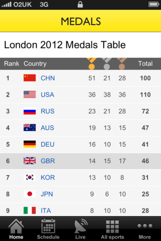
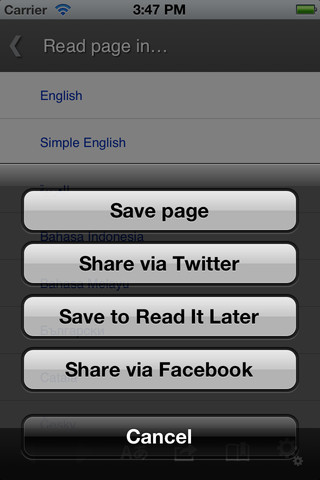
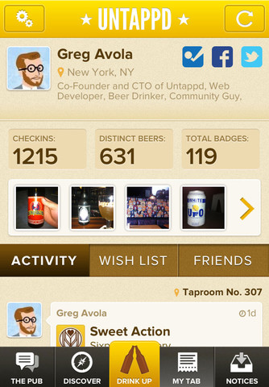
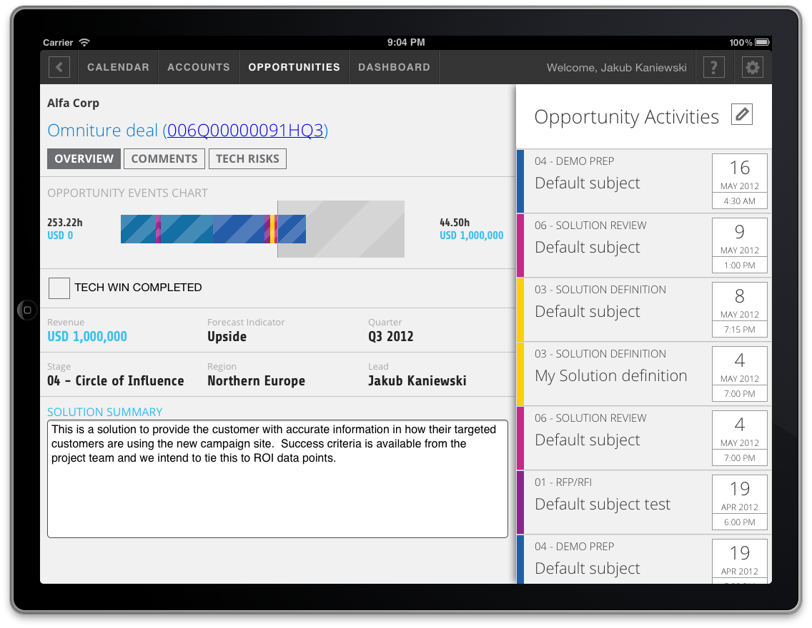
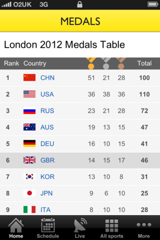
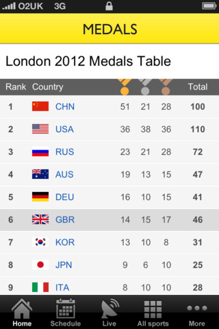
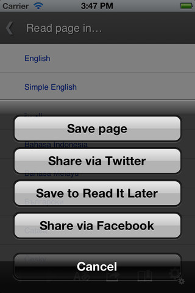
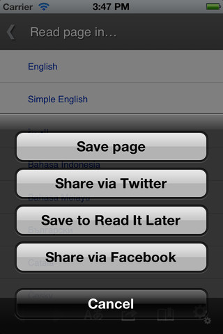

Building multiplatform mobile apps with force.com and PhoneGap
Piotr Walczyszyn |
outof.me
|
@pwalczyszyn
Agenda
Mobile apps development landscape
Understanding PhoneGap technology
PhoneGap apps demos
Live coding PhoneGap app connected to force.com
Mobile Market Segmentation
Native
vs.
Hybrid
vs.
Web
Native
- Pros
Best performance
Consistent user experience
Instant native APIs access
App stores distribution & monetization
Native
- Cons
Multiple programing languages
High costs of development & maintenance
Different development platforms
Hybrid
- Pros
(PhoneGap/Cordova apps)
Multi-platform support
Native API access
Lower costs of development & maintenance
App stores distribution & monetization
Using new kid on the block HTML5/CSS3/JS stack
Using existing skills in case of web devs
Hybrid
- Cons
(PhoneGap/Cordova apps)
Performance depends on web engine implementations
No OOTB user experience
Limited graphical capabilities
No WebGL support yet
Limited SVG support
Web
- Pros
Standard web distribution
Using new kid on the block HTML5/CSS3/JS stack
Any platform support
Web
- Cons
Headaches of web development
Browsers fragmentation
Inconsistent Web Standards implementations
What is it?
PhoneGap - what is it for?
Data-centric apps , business type of apps
Social networking
Graphically simple games and animations
Extending existing in-browser apps with native features
How do you use it?
Use your existing skills!
... and much much more ...
Let's see it in action!
BBC Olympics

Wikipedia Mobile

Untappd - Social Drinking

SC Insight
Adobe internal app
SC Insight
Adobe internal app

SC Insight
Adobe internal app
Let's build something
THE END
Piotr Walczyszyn |
outof.me
|
@pwalczyszyn


 

 
